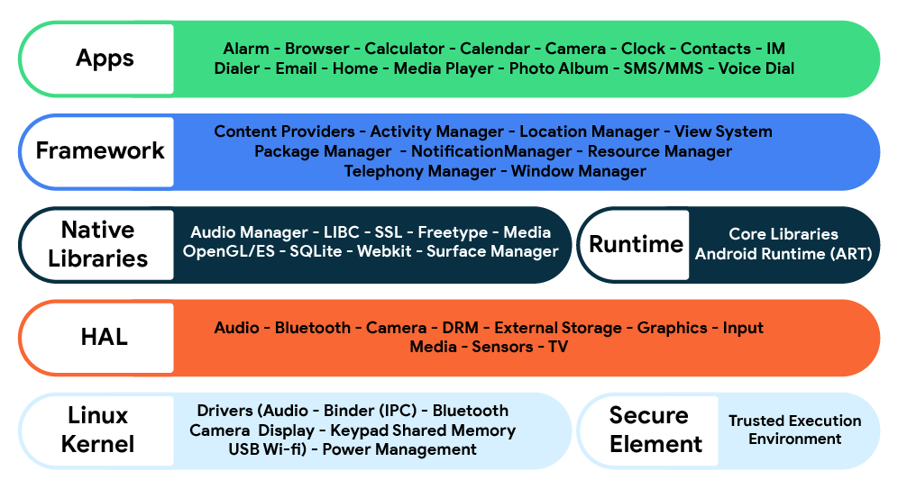

Android Camera理论协议和规范
简介
本篇文章初步解决如下问题：
- 总结Android系统中的Camera硬件规范
- 总结为何拍照，摄像不同手机不同系统中使用固定的intent能够调用
- 总结为何不同手机操作系统，摄像头以及摄像头产出的图片和视频格式的行为是一致的
Android体系设计理念
Android 源自于 Google 牵头并联合众多企业成立的”开放手持设备联盟”(OHA)。许多企业在 Android 上投入了大量资金和人力，要把Android打造成一个针对多种不同设备类型的开放源代码软件堆栈平台，其设计可确保不存在一个集中瓶颈。因此没有任何行业参与者可一手限制或控制其他参与者的创新。即可以打造功能完善的高品质消费类产品，而且可以完全开放源代码，供第三方自由定制和移植。

Android兼容性计划
既然Android是完全开放源代码的，全世界又有很多的Android设备制造商，Android软件开发者，那如何保证不同的手机使用Android系统能有一致的硬件兼容和用户体验呢。这里就得提到Android兼容性计划
- 其定义了 Android 平台的技术细节，并为原始设备制造商 (OEM) 提供了各种工具，以确保开发者应用可以在各种设备上顺利运行。
- 为应用开发者提供一致的应用和硬件环境。兼容性计划精确定义了开发者在 API 和功能方面可以从兼容设备上获得什么支持。开发者可以确信他们的应用在任何兼容设备上顺畅地运行。
- 最大限度降低与兼容性相关的成本和开销。确保设备制造商能够轻松地实现兼容性，并且成本低廉。
- 为消费者提供一致的应用体验。如果某个应用在一部兼容的 Android 设备上运行良好，那么它在与同一 Android 平台版本兼容的任何其他设备上也应运行良好。
Camera相关定义规范
这里参考Android 10.0列出于Camera相关的规范定义，需要重点注意的，我标记为红色字体。更多详细内容可参考1
摄像头
如果设备实现包含至少一个摄像头，则：
- [C-1-1] 必须声明
android.hardware.camera.any功能标记。 - [C-1-2] 当摄像头打开着以进行基本预览和静态拍摄时，必须确保应用可以同时分配 3 个 RGBA_8888 位图，并且其大小与设备上分辨率最高的摄像头传感器所生成的图片相同。
- [C-1-3] 必须确保处理 intent
MediaStore.ACTION_IMAGE_CAPTUREMediaStore.ACTION_IMAGE_CAPTURE_SECUREMediaStore.ACTION_VIDEO_CAPTURE的预安装默认摄像头应用负责先移除图像元数据中的用户位置，再将其发送至接收应用（如果接收应用没有ACCESS_FINE_LOCATION）。
后置摄像头
后置摄像头指位于设备上背向显示屏一侧的摄像头，也就是说，与传统摄像头一样，它拍摄的是背向设备显示屏一侧的景物。
设备实现：
- 应包含后置摄像头。
如果设备实现包含至少一个后置摄像头，则：
- [C-1-1] 必须报告功能标记
android.hardware.camera和android.hardware.camera.any。 - [C-1-2] 分辨率必须至少为 200 万像素。
- 应在摄像头驱动程序中实现硬件自动对焦或软件自动对焦（对应用软件透明）。
- 可以具有固定焦距硬件或 EDOF（扩展景深）硬件。
- 可以包含闪光灯。
如果摄像头包含闪光灯，则：
- [C-2-1] 当已在摄像头预览 Surface 上注册
android.hardware.Camera.PreviewCallback实例时，闪光灯不得亮起，除非应用已通过启用FLASH_MODE_AUTO或FLASH_MODE_ON属性（属于Camera.Parameters对象）明确启用闪光灯。请注意，此项限制不适用于设备的内置系统摄像头应用，而仅适用于使用Camera.PreviewCallback的第三方应用。
前置摄像头
前置摄像头指与设备上的显示屏位于同一侧的摄像头，也就是通常用于拍摄用户自己的摄像头，例如用于视频会议及类似应用的摄像头。
设备实现：
- 可以包含前置摄像头。
如果设备实现包含至少一个前置摄像头，则：
- [C-1-1] 必须报告功能标记
android.hardware.camera.any和android.hardware.camera.front。 - [C-1-2] 分辨率必须至少为 VGA（640x480 像素）。
- [C-1-3] 不得将前置摄像头用作 Camera API 的默认摄像头，并且不得将该 API 配置为将前置摄像头视为默认后置摄像头，即使它是设备上的唯一摄像头也是如此。
- [C-1-4] 如果当前应用已通过调用
android.hardware.Camera.setDisplayOrientation()方法明确请求旋转摄像头显示方向，则必须相对于应用指定的方向水平镜像摄像头预览。反之，如果当前应用未通过调用android.hardware.Camera.setDisplayOrientation()方法明确请求旋转摄像头显示方向，则必须沿着设备的默认水平轴镜像预览。 - [C-1-5] 对于最终拍好后返回给应用回调或提交到媒体存储空间的静态图像或视频流，不得对其进行镜像。
- [C-1-6] 必须按照镜像摄像头预览图像流时的方式镜像由 postview 显示的图像。
- 可以包含可供后置摄像头使用的功能，例如自动对焦、闪光灯等。
如果用户能够旋转设备实现（例如通过加速度计自动旋转或通过用户输入手动旋转），则：
- [C-2-1] 必须相对于设备的当前方向水平镜像摄像头预览。
外接摄像头
设备实现：
- 可以支持无需一直连接到设备的外接摄像头。
如果设备实现支持外接摄像头，则：
- [C-1-1] 必须声明平台功能标记
android.hardware.camera.external和android.hardware camera.any。 - [C-1-2] 如果通过 USB 主机端口连接外接摄像头，则必须支持 USB Video Class（UVC 1.0 或更高版本）。
- [C-1-3] 必须在连接实体外接摄像头设备的情况下通过摄像头 CTS 测试。有关摄像头 CTS 测试的详细信息，请参阅 source.android.com。
- 应支持 MJPEG 等视频压缩，以便传输高品质的未编码流（即原始照片流或独立压缩的照片流）。
- 可以支持多个摄像头。
- 可以支持基于摄像头的视频编码。
如果支持基于摄像头的视频编码，则
- [C-2-1] 并发的未编码/MJPEG 流（QVGA 或更高分辨率）必须可供设备实现访问。
Camera API行为
Camera API的行为都比较重要！！！！！，摄像头产出的图片格式如YUV，NV21，YV12克参考2
Android 包含两个用于访问摄像头的 API 包，较新的 android.hardware.camera2 API 使应用可以对摄像头进行较低级别的控制，包括高效的零复制连拍/视频流，以及按帧对曝光、增益、白平衡增益、颜色转换、去噪、锐化等进行控制。
较旧的 API 软件包 android.hardware.Camera 在 Android 5.0 中被标为已弃用，但由于该软件包应仍可供应用使用，因此 Android 设备实现必须确保持续支持该 API（如本节和 Android SDK 中所述）。
已弃用的 android.hardware.Camera 类和较新的 android.hardware.camera2 软件包都具备的功能在这两种 API 中的性能和质量必须相当。例如，具有等效设置，自动对焦速度和精确度必须完全相同，且所拍图片的质量必须相同。依赖这两种 API 的不同语义的功能无需在速度和质量方面保持一致，但应尽可能保持一致。
设备实现必须为所有可用的摄像头实现摄像头相关 API 的以下行为。设备实现：
- [C-0-1] 对于提供给应用回调的预览数据，必须使用
android.hardware.PixelFormat.YCbCr_420_SP（如果应用从未调用过android.hardware.Camera.Parameters.setPreviewFormat(int)）。 - [C-0-2] 如果应用注册了
android.hardware.Camera.PreviewCallback实例，系统调用了onPreviewFrame()方法，并且预览格式为 YCbCr_420_SP，则传递到onPreviewFrame()中的 byte[] 格式的数据必须进一步采用 NV21 编码格式。也就是说，NV21 必须是默认设置。 - [C-0-3] 必须支持使用 YV12 格式（用
android.graphics.ImageFormat.YV12常量表示）进行前置摄像头和后置摄像头的摄像头预览（对于android.hardware.Camera。（硬件视频编码器和摄像头可以使用任何本机像素格式，但设备实现必须支持将其转换为 YV12。） - [C-0-4] 必须支持使用
android.hardware.ImageFormat.YUV_420_888和android.hardware.ImageFormat.JPEG作为输出格式（通过android.media.ImageReaderAPI（对于在android.request.availableCapabilities中通告REQUEST_AVAILABLE_CAPABILITIES_BACKWARD_COMPATIBLE功能的android.hardware.camera2设备）。 - [C-0-5] 仍必须实现 Android SDK 文档中包含的完整 Camera API，无论设备是否包含硬件自动对焦或其他功能都是如此。例如，没有自动对焦功能的摄像头仍必须调用所有已注册的
android.hardware.Camera.AutoFocusCallback实例（即使这与非自动对焦摄像头无关）。请注意，这适用于前置摄像头。例如，虽然大多数前置摄像头都不支持自动对焦，但仍必须如所述那样“伪造”API 回调。 - [C-0-6] 必须识别并遵从
android.hardware.Camera.Parameters类和android.hardware.camera2.CaptureRequest类中定义为常量的每个参数名称。反之，设备实现不得遵从或识别传递给android.hardware.Camera.setParameters()方法的字符串常量，在android.hardware.Camera.Parameters中载述为常量的字符串常量除外。也就是说，设备实现必须支持所有标准摄像头参数（如果硬件允许），不得支持自定义摄像头参数类型。例如，如果设备实现支持使用高动态范围 (HDR) 成像技术拍照，则必须支持摄像头参数Camera.SCENE_MODE_HDR。 - [C-0-7] 必须通过
android.info.supportedHardwareLevel属性报告正确的支持级别（如 Android SDK 中所述），并报告相应的框架功能标记。 - [C-0-8] 还必须通过
android.hardware.camera2属性声明android.request.availableCapabilities的各项摄像头功能，并声明相应的功能标记；如果连接的任何摄像头设备支持某项功能，则必须定义相应的功能标记。 - [C-0-9] 每当摄像头拍摄了新照片且相应的照片条目已添加到媒体存储区时，都必须广播
Camera.ACTION_NEW_PICTUREIntent。 - [C-0-10] 每当摄像头录制了新视频且相应的视频条目已添加到媒体存储区时，都必须广播
Camera.ACTION_NEW_VIDEOIntent。 - [C-0-11] 必须使所有摄像头都可通过已弃用的
android.hardware.CameraAPI 以及android.hardware.camera2API 访问。 - [C-SR] 对于多个 RGB 摄像头朝向同一方向的设备，强烈建议支持列出
CameraMetadata.REQUEST_AVAILABLE_CAPABILITIES_LOGICAL_MULTI_CAMERA功能的逻辑摄像头设备，包含所有和物理子设备一样朝向该方向的 RGB 摄像头。
如果设备实现向第三方应用提供专有摄像头 API，则：
- [C-1-1] 必须使用
android.hardware.camera2API 实现此类摄像头 API。 - 可以提供供应商标签和/或
android.hardware.camera2API 扩展。
摄像头方向
如果设备实现具有前置或后置摄像头，则此类摄像头：
- [C-1-1] 必须朝向正确方向，以便摄像头的长度方向与屏幕的长度方向对齐。也就是说，当设备处于横向时，摄像头必须横向拍摄。无论设备的自然方向为何，此规则都适用；也就是说，它适用于以横向为主的设备以及以纵向为主的设备。
图像编码
设备实现必须支持以下图像编码：
- [C-0-1]
JPEG - [C-0-2]
PNG - [C-0-3]
WebP
如果设备实现支持通过 android.media.MediaCodec 对媒体类型 MIMETYPE_IMAGE_ANDROID_HEIC 进行 HEIC 编码，则：
- [C-1-1] 必须提供支持
BITRATE_MODE_CQ比特率控制模式、HEVCProfileMainStill配置文件和512 x 512 px帧尺寸的硬件加速HEVC编码器编解码器。
图像解码
设备实现必须支持以下图像解码：
- [C-0-1]
JPEG - [C-0-2]
GIF - [C-0-3]
PNG - [C-0-4]
BMP - [C-0-5]
WebP - [C-0-6]
Raw - [C-0-7]
HEIF (HEIC)
通过 MediaCodec API 公开的图像编码器和解码器
- [C-1-1] 必须通过
CodecCapabilities支持 YUV420 8:8:8 灵活颜色格式 (COLOR_FormatYUV420Flexible)。 - [SR] 强烈建议支持用于输入 Surface 模式的 RGB888 颜色格式。
- [C-1-3] 必须至少支持一个平面或半平面 YUV420 8:8:8 颜色格式：
COLOR_FormatYUV420PackedPlanar（等同于COLOR_FormatYUV420Planar）或COLOR_FormatYUV420PackedSemiPlanar（等同于COLOR_FormatYUV420SemiPlanar）。强烈建议同时支持二者。
视频编解码器
| 格式/编解码器 | 支持文件类型 |
|---|---|
| H.263 | 3GPP (.3gp) MPEG-4 (.mp4) Matroska（.mkv、仅适用于解码) |
| H.264 AVC | 3GPP (.3gp) MPEG-2 TS (.ts,不可查找) MPEG-4 (.mp4) Matroska（.mkv、仅适用于解码) |
| H.265 HEVC | MPEG-4 (.mp4) Matroska（.mkv、仅适用于解码) |
| MPEG-2 | MPEG-2 TS (.ts,不可查找) MPEG-4 (.mp4) Matroska（.mkv、仅适用于解码) |
| MPEG-4 SP | 3GPP (.3gp) MPEG-4 (.mp4) Matroska（.mkv、仅适用于解码) |
| VP8 | WebM (.webm) Matroska (.mkv) |
| VP9 | WebM (.webm) Matroska (.mkv) |
视频编码
如果设备实现支持任何视频编码器，并使其可供第三方应用使用，则：
- 采用两个滑窗时，比帧内 (I-frame) 间隔之间的比特率高出的幅度不应超过 15% 左右。
- 比采用一个 1 秒的滑窗时的比特率高出的幅度不应超过 100% 左右。
如果设备实现包含对角线长度至少为 2.5 英寸的嵌入式显示屏，或包含视频输出端口，或通过 android.hardware.camera.any 功能标记声明支持摄像头，则：
- [C-1-1] 必须支持至少一个 VP8 或 H.264 视频编码器，并使其可供第三方应用使用。
- 应同时支持 VP8 和 H.264 视频编码器，并使其可供第三方应用使用。
如果设备实现支持 H.264、VP8、VP9 或 HEVC 视频编码器中的任何一个，并使其可供第三方应用使用，则：
- [C-2-1] 必须支持可动态配置的比特率。
- 应支持可变帧速率，在这种情况下，视频编码器应根据输入缓存的时间戳来确定瞬时帧时长，并根据该时长来分配其位存储分区。
如果设备实现支持 MPEG-4 SP 视频编码器，并使其可供第三方应用使用，则：
- 应针对支持的编码器支持可动态配置的比特率。
如果设备实现提供硬件加速视频或图片编码器，并且支持一个或多个通过 android.camera API 公开的已连接或可插拔硬件摄像头，则：
- [C-4-1] 所有硬件加速视频和图片编码器都必须支持从硬件摄像头编码帧。
- 应支持通过所有视频或图片编码器从硬件摄像头编码帧。
H.263
如果设备实现支持 H.263 编码器，并使其可供第三方应用使用，则：
- [C-1-1] 必须支持 Baseline Profile Level 45。
- 应针对支持的编码器支持可动态配置的比特率。
H.264
如果设备实现支持 H.264 编解码器，则：
- [C-1-1] 必须支持 Baseline Profile Level 3。不过，可以选择是否支持 ASO（任意切片顺序）、FMO（灵活宏块顺序）和 RS（冗切片）。此外，为了保持与其他 Android 设备兼容，对于 Baseline Profile，建议编码器不要使用 ASO、FMO 和 RS。
- [C-1-2] 必须支持下表中的标清视频编码配置。
- 应支持 Main Profile Level 4。
- 应支持下表中所列的高清视频编码配置。
如果设备实现通过媒体 API 报告支持对分辨率为 720p 或 1080p 的视频进行 H.264 编码，则：
- [C-2-1] 必须支持下表中的编码配置。
| 标清（低画质） | 标清（高画质） | 高清 720p | 高清 1080p | |
|---|---|---|---|---|
| 视频分辨率 | 320 x 240 像素 | 720 x 480 像素 | 1280 x 720 像素 | 1920 x 1080 像素 |
| 视频帧速率 | 20 fps | 30 fps | 30 fps | 30 fps |
| 视频比特率 | 384 Kbps | 2 Mbps | 4 Mbps | 10 Mbps |
VP8
如果设备实现支持 VP8 编解码器，则：
- [C-1-1] 必须支持标清视频编码配置。
- 应支持以下高清视频编码配置。
- [C-1-2] 必须支持写入 Matroska WebM 文件。
- 应提供满足 WebM 项目 RTC 硬件编码要求的硬件 VP8 编解码器，以确保网络视频流和视频会议服务的质量达到可接受的水平。
如果设备实现通过媒体 API 报告支持对分辨率为 720p 或 1080p 的视频进行 VP8 编码，则：
- [C-2-1] 必须支持下表中的编码配置。
| 标清（低画质） | 标清（高画质） | 高清 720p | 高清 1080p | |
|---|---|---|---|---|
| 视频分辨率 | 320 x 180 像素 | 640 x 360 像素 | 1280 x 720 像素 | 1920 x 1080 像素 |
| 视频帧速率 | 30 fps | 30 fps | 30 fps | 30 fps |
| 视频比特率 | 800 Kbps | 2 Mbps | 4 Mbps | 10 Mbps |
VP9
如果设备实现支持 VP9 编解码器，则：
- [C-1-2] 必须支持 Profile 0 Level 3。
- [C-1-1] 必须支持写入 Matroska WebM 文件。
- [C-1-3] 必须生成 CodecPrivate 数据。
- 应支持下表中所列的高清解码配置。
- [SR] 最好支持下表中所列的高清解码配置（如果有硬件编码器）（）。
| 标清 | 高清 720p | 高清 1080p | 超高清 | |
|---|---|---|---|---|
| 视频分辨率 | 720 x 480 像素 | 1280 x 720 像素 | 1920 x 1080 像素 | 3840 x 2160 像素 |
| 视频帧速率 | 30 fps | 30 fps | 30 fps | 30 fps |
| 视频比特率 | 1.6 Mbps | 4 Mbps | 5 Mbps | 20 Mbps |
如果设备实现声明通过媒体 API 支持 Profile 2 或 Profile 3：
- 可选择是否支持 12 位格式。
H.265
如果设备实现支持 H.265 编解码器，则：
- [C-1-1] 必须支持 Main Profile Level 3。
- 应支持下表中所列的高清编码配置。
- [SR] 强烈建议支持下表中所列的高清编码配置（如果有硬件编码器的话）。
| 标清 | 高清 720p | 高清 1080p | 超高清 | |
|---|---|---|---|---|
| 视频分辨率 | 720 x 480 像素 | 1280 x 720 像素 | 1920 x 1080 像素 | 3840 x 2160 像素 |
| 视频帧速率 | 30 fps | 30 fps | 30 fps | 30 fps |
| 视频比特率 | 1.6 Mbps | 4 Mbps | 5 Mbps | 20 Mbps |
视频解码
如果设备实现支持 VP8、VP9、H.264 或 H.265 编解码器，则：
- [C-1-1] 对于所有 VP8、VP9、H.264 和 H.265 编解码器，都必须支持通过标准 Android API 在同一视频流内实时进行动态视频分辨率和帧速率切换，并且能够支持设备上每个编解码器所支持的最大分辨率。
MPEG-2
如果设备实现支持 MPEG-2 解码器，则：
- [C-1-1] 必须支持 Main Profile High Level。
H.263
如果设备实现支持 H.263 解码器，则：
- [C-1-1] 必须支持 Baseline Profile Level 30 和 Level 45。
MPEG-4
如果设备实现具有 MPEG-4 解码器，则：
- [C-1-1] 必须支持 Simple Profile Level 3。
H.264
如果设备实现支持 H.264 解码器，则：
- [C-1-1] 必须支持 Main Profile Level 3.1 和 Baseline Profile。可以选择是否支持 ASO（任意切片顺序）、FMO（灵活宏块顺序）和 RS（冗切片）。
- [C-1-2] 必须能够对以下视频进行解码：采用下表中所列的标清配置，且使用 Baseline Profile 和 Main Profile Level 3.1（包括 720p30）编码的视频。
- 应能够对采用下表中所列高清配置的视频进行解码。
如果 Display.getSupportedModes() 方法报告的高度等于或大于视频分辨率，则设备实现：
- [C-2-1] 必须支持下表中的高清 720p 视频解码配置。
- [C-2-2] 必须支持下表中的高清 1080p 视频解码配置。
| 标清（低画质） | 标清（高画质） | 高清 720p | 高清 1080p | |
|---|---|---|---|---|
| 视频分辨率 | 320 x 240 像素 | 720 x 480 像素 | 1280 x 720 像素 | 1920 x 1080 像素 |
| 视频帧速率 | 30 fps | 30 fps | 60 fps | 30 fps (60 fpsTV) |
| 视频比特率 | 800 Kbps | 2 Mbps | 8 Mbps | 20 Mbps |
H.265 (HEVC)
如果设备实现支持 H.265 编解码器，则：
- [C-1-1] 必须支持 Main Profile Level 3 Main Tier 和下表中所列的标清视频解码配置。
- 应支持下表中所列的高清解码配置。
- [C-1-2] 必须支持下表中所列的高清解码配置（如果有硬件解码器的话）。
如果 Display.getSupportedModes() 方法报告的高度等于或大于视频分辨率，则：
- [C-2-1] 设备实现必须至少支持 720、1080 和超高清配置的 H.265 或 VP9 解码之一。
| 标清（低画质） | 标清（高画质） | 高清 720p | 高清 1080p | 超高清 | |
|---|---|---|---|---|---|
| 视频分辨率 | 352 x 288 像素 | 720 x 480 像素 | 1280 x 720 像素 | 1920 x 1080 像素 | 3840 x 2160 像素 |
| 视频帧速率 | 30 fps | 30 fps | 30 fps | 30/60 fps（60 fps采用 H.265 硬件解码的 TV） | 60 fps |
| 视频比特率 | 600 Kbps | 1.6 Mbps | 4 Mbps | 5 Mbps | 20 Mbps |
如果设备实现声明通过媒体 API 支持 HDR 配置，则：
- [C-3-1] 设备实现必须从应用中接受所需的 HDR 元数据，以及支持从比特流和/或容器提取和输出所需的 HDR 元数据。
- [C-3-2] 设备实现必须在设备屏幕或标准视频输出端口（如 HDMI）上正确显示 HDR 内容。
VP8
如果设备实现支持 VP8 编解码器，则：
- [C-1-1] 必须支持下表中的标清解码配置。
- 应使用满足要求的硬件 VP8 编解码器。
- 应支持下表中的高清解码配置。
如果 Display.getSupportedModes() 方法报告的高度等于或大于视频分辨率，则：
- [C-2-1] 设备实现必须支持下表中的 720p 配置。
- [C-2-2] 设备实现必须支持下表中的 1080p 配置。
| 标清（低画质） | 标清（高画质） | 高清 720p | 高清 1080p | |
|---|---|---|---|---|
| 视频分辨率 | 320 x 180 像素 | 640 x 360 像素 | 1280 x 720 像素 | 1920 x 1080 像素 |
| 视频帧速率 | 30 fps | 30 fps | 30 fps (60 fpsTV) | 30 (60 fpsTV) |
| 视频比特率 | 800 Kbps | 2 Mbps | 8 Mbps | 20 Mbps |
VP9
如果设备实现支持 VP9 编解码器，则：
- [C-1-1] 必须支持下表中所列的标清视频解码配置。
- 应支持下表中所列的高清解码配置。
如果设备实现支持 VP9 编解码器和硬件解码器，则：
- [C-2-1] 必须支持下表中所列的高清解码配置。
如果 Display.getSupportedModes() 方法报告的高度等于或大于视频分辨率，则：
- [C-3-1] 设备实现必须至少支持 720、1080 和超高清配置的 VP9 或 H.265 解码之一。
| 标清（低画质） | 标清（高画质） | 高清 720p | 高清 1080p | 超高清 | |
|---|---|---|---|---|---|
| 视频分辨率 | 320 x 180 像素 | 640 x 360 像素 | 1280 x 720 像素 | 1920 x 1080 像素 | 3840 x 2160 像素 |
| 视频帧速率 | 30 fps | 30 fps | 30 fps | 30 fps（60 fps采用 VP9 硬件解码的 TV） | 60 fps |
| 视频比特率 | 600 Kbps | 1.6 Mbps | 4 Mbps | 5 Mbps | 20 Mbps |
如果设备实现声明通过 ‘CodecProfileLevel’ 媒体 API 支持 VP9Profile2 或 VP9Profile3，则：
- 可选择是否支持 12 位格式。
如果设备实现声明通过媒体 API 支持 HDR 配置文件（VP9Profile2HDR、VP9Profile2HDR10Plus、VP9Profile3HDR、VP9Profile3HDR10Plus）：
- [C-4-1] 设备实现必须从应用中接受所需的 HDR 元数据（对于所有 HDR 配置文件，应接受
KEY_HDR_STATIC_INFO，而对于 HDR10Plus 配置文件，则应接受 ‘KEY_HDR10_PLUS_INFO’）。它们还必须支持从比特流和/或容器中提取和输出所需的 HDR 元数据。 - [C-4-2] 设备实现必须在设备屏幕或标准视频输出端口（如 HDMI）上正确显示 HDR 内容。